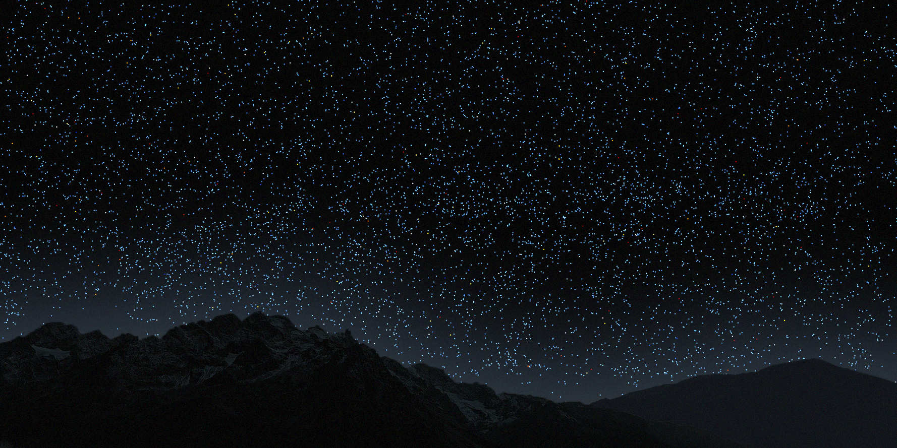

Quasars
They are massive black holes located at the center of certain galaxies. As they accrete surrounding gas, they become extremely bright and can be seen across the Universe. Their light is blueish. At these distances, galaxies have become too faint the Sloan Digital Sky Survey telescope.